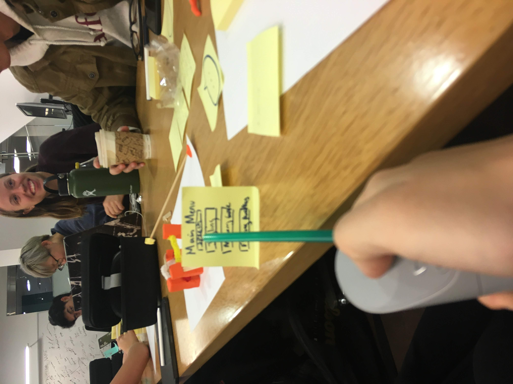
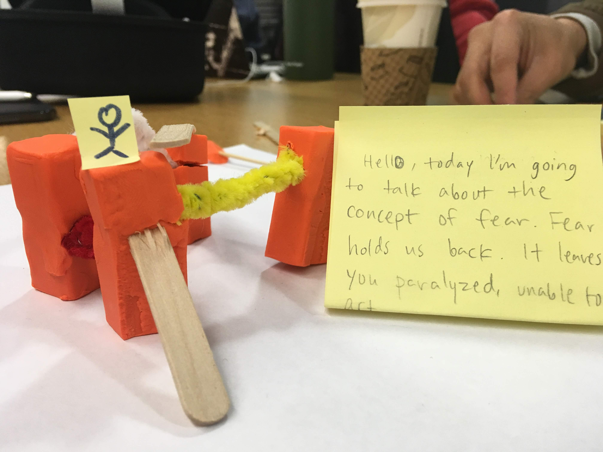
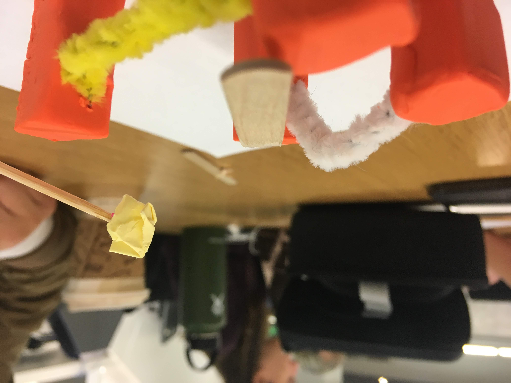

Frightrope!
As part of Stanford's CS11SI: VR Application Development in Unity, I worked in a group of 3 to create a twist on the classic tightrope walking game. Developed for the Oculus Go, the user can only move forward when they are speaking the words on the screen. The speech is captured by the microphone on the headset.
Rapid Prototyping
Menu
Speech on canvas
Flying obstacles
